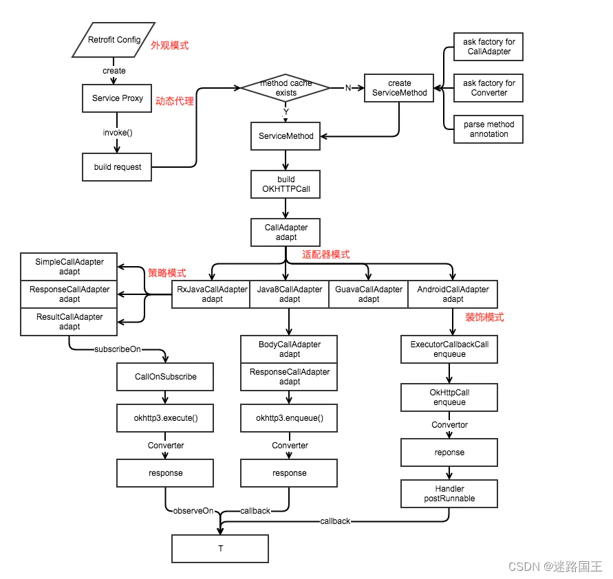
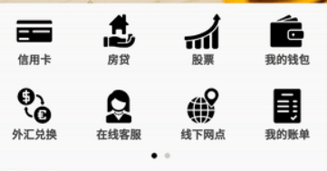

开源框架
EventBus¶
使用注解、反射、3.x后添加apt代替反射
mmkv¶
github: https://github.com/Tencent/MMKV/
写入快，小数据快，支持多进程，不会自动备份数据，初始化加载文件或大字符时可能会卡顿
诞生目的：解决高频主线程写数据
datastore¶
诞生目的：代替SharedPreferences
支持多进程，会自动备份，大数据存储比mmkv快
OKhttp¶
准备知识：java基础、网络编程、HTTP协议、设计模式
保持长连接：加快请求效率，重复使用socket，需要服务器支持
key: Connection value: keep-alive
如果响应返回也有是keep-alive说明支持，如果是close则不支持
http1.1开始支持，但只能串行(保证有序)，即上一个请求完成后才能下一个请求
http2.0支持并行(多了顺序标识保证有序)
OkHttp缓存默认关闭需要调用.cache(path)
分发流程¶
override fun enqueue(responseCallback: Callback) {
check(executed.compareAndSet(false, true)) { "Already Executed" }
callStart()
client.dispatcher.enqueue(AsyncCall(responseCallback))
}
internal fun enqueue(call: AsyncCall) {
synchronized(this) {
// 添加到准备队列中
readyAsyncCalls.add(call)
if (!call.call.forWebSocket) {
val existingCall = findExistingCallWithHost(call.host)
if (existingCall != null) call.reuseCallsPerHostFrom(existingCall)
}
}
promoteAndExecute()
}
private fun promoteAndExecute(): Boolean {
//...
synchronized(this) {
val i = readyAsyncCalls.iterator()
while (i.hasNext()) {
val asyncCall = i.next()
// 最大异步请求64个
if (runningAsyncCalls.size >= this.maxRequests) break // Max capacity.
// 同一个host不能大于5，比如请求百度不能同时来6次，第6次等待
if (asyncCall.callsPerHost.get() >= this.maxRequestsPerHost) continue // Host max capacity.
i.remove()
asyncCall.callsPerHost.incrementAndGet()
// 添加到需要执行的请求队列中
executableCalls.add(asyncCall)
// 添加到执行队列中
runningAsyncCalls.add(asyncCall)
}
isRunning = runningCallsCount() > 0
}
for (i in 0 until executableCalls.size) {
val asyncCall = executableCalls[i]
asyncCall.executeOn(executorService)// 遍历执行异步请求
}
return isRunning
}
fun executeOn(executorService: ExecutorService) {
//...
try {
executorService.execute(this) //执行run方法
}
//...
}
executorService：相当于Executor.newCachedThreadPool
// SynchronousQueue: 不用等待前面请求，并行执行
ThreadPoolExecutor(0, Int.MAX_VALUE, 60, TimeUnit.SECONDS,
SynchronousQueue(), threadFactory("$okHttpName Dispatcher", false))
override fun run() {
//...
finally {
// 会重写执行promoteAndExecute方法触发下一个请求(如果还有下一个请求)
client.dispatcher.finished(this)
}
}
拦截器¶
- 重试重定向拦截器：判断是否取消，获得结果后根据响应码判断是否重定向，满足条件会重启所有拦截器
- 桥接拦截器：自动添加host等http协议必备的请求头，cookie相关
- 缓存拦截器：缓存相关
- 连接拦截器：负责找到或者创建一个拦截器，不会额外处理数据
- 请求服务器拦截器：真正与服务器通信
自定义拦截器
Interceptor和NetworkInterceptor：前者添加到最开始，后者添加到最后，所以请求有前者先获得，响应由后者先获取，因为先请求后响应
HttpLoggingInterceptor添加到上面两个效果不同，后者由于放最后能拿到所有请求内容
分发器工作流程
同步：主要记录到队列中直接请求；异步：需要先放到准备队列满足64和5条件后再请求
拦截器分发流程
责任链模式
请求流程：创建client->realCall->同步、异步(AsynCall)->分发器->拦截器请求
getResponseWithInterceptorChain：所有拦截器所在
重定向拦截器¶
最多20次，.retryOnConnectionFailure(false)关闭重试默认开启
某些异常不重试：协议异常(204)、io中断异常(Socket重试除外)、证书异常、证书验证异常
基于Socket网络请求，HttpURLConnection也是基于Socket封装
Retrofit¶
官方网址：https://github.com/square/retrofit
本身不支持网络请求，面向切面编程，aop思想
应用8种设计模式¶
构建者模式(Builder)：使用规则是参数超过5且可选时，Retrofit的创建时使用到
外观模式：容易使用，符合迪米特法则，create即可创建实例；三方sdk常用
装饰者模式：组合的形式拓展功能，如io中的BufferedoutputStream(FileOutputStream(File))可以单独也可以组合使用，根据需求增减十分灵活；retrofit在ExecutorCallbackCall拓展OkHttpCall功能，添加切换到主线程功能(MainThreadExecutor采用Handler)
代理模式vs装饰者模式区别：代理后对象变了，装饰后只是增强功能
适配器模式：OkHttpCall转成ExecutorCallbackCall
策略模式：CallAdapter根据不同返回类型采取不同算法

原理¶
核心知识：动态代理、注解、反射
Retrofit的创建
Retrofit.Builder()
.baseUrl(BASE_URL)
.client(createDefaultOkhttp())
.addConverterFactory(GsonConverterFactory.create())
.build()
retrofit.create(ChatGptApi::class.java)
public <T> T create(final Class<T> service) {
validateServiceInterface(service);
return (T)
Proxy.newProxyInstance(
service.getClassLoader(),
new Class<?>[] {service},
new InvocationHandler() {
private final Platform platform = Platform.get();
private final Object[] emptyArgs = new Object[0];
@Override
public @Nullable Object invoke(Object proxy, Method method, @Nullable Object[] args)
throws Throwable {
if (method.getDeclaringClass() == Object.class) {
return method.invoke(this, args);
}
args = args != null ? args : emptyArgs;
return platform.isDefaultMethod(method)
? platform.invokeDefaultMethod(method, service, proxy, args)
: loadServiceMethod(method).invoke(args);
}
});
}
ServiceMethod<?> loadServiceMethod(Method method) {
ServiceMethod<?> result = serviceMethodCache.get(method);
if (result != null) return result;
synchronized (serviceMethodCache) {
result = serviceMethodCache.get(method);
if (result == null) {
result = ServiceMethod.parseAnnotations(this, method);
serviceMethodCache.put(method, result);
}
}
return result;
}
Glide¶
官方网址：https://github.com/bumptech/glide
Glide.with().load().into()
with：空白Fragment管理生命周期(ui线程才会创建、如果是application也不创建)，同步到RequestManager方便管理类似ImageViewTarget等类
load：构建出RequestBuilder对象
into：运行队列 等待队列 活动缓存 内存缓存 网络模型
源码分析：
https://blog.csdn.net/u013347784/article/details/125728996
默认是网络请求是使用HttpURLConnection
活动缓存、内存缓存、磁盘缓存
Coil¶
官方网址：https://github.com/coil-kt/coil
默认网络请求是使用OkHttp
活动缓存、内存缓存、磁盘缓存
RecyclerView相关库¶
1.实现仿美团双排翻页效果： https://github.com/GcsSloop/pager-layoutmanager

2.实现仿微信九宫格效果：https://github.com/MartinMu2016/NineGridLayoutManager
3.实现吸顶效果：https://github.com/donkingliang/ConsecutiveScroller
4.快速使用BaseRecyclerViewAdapterHelper：https://github.com/CymChad/BaseRecyclerViewAdapterHelper
implementation（"io.github.cymchad:BaseRecyclerViewAdapterHelper4:4.1.2")
class TestAdapter : BaseQuickAdapter<Status, TestAdapter.VH>() {
// 自定义ViewHolder类
class VH(
parent: ViewGroup,
val binding: LayoutAnimationBinding = LayoutAnimationBinding.inflate(
LayoutInflater.from(parent.context), parent, false
),
) : RecyclerView.ViewHolder(binding.root)
override fun onCreateViewHolder(context: Context, parent: ViewGroup, viewType: Int): VH {
// 返回一个 ViewHolder
return VH(parent)
}
override fun onBindViewHolder(holder: VH, position: Int, item: Status?) {
// 设置item数据
}
}
rvAdapter.submitList(mutableListOf<Media>().also { it.addAll(imgUrls) })
下拉刷新库¶
https://github.com/scwang90/SmartRefreshLayout